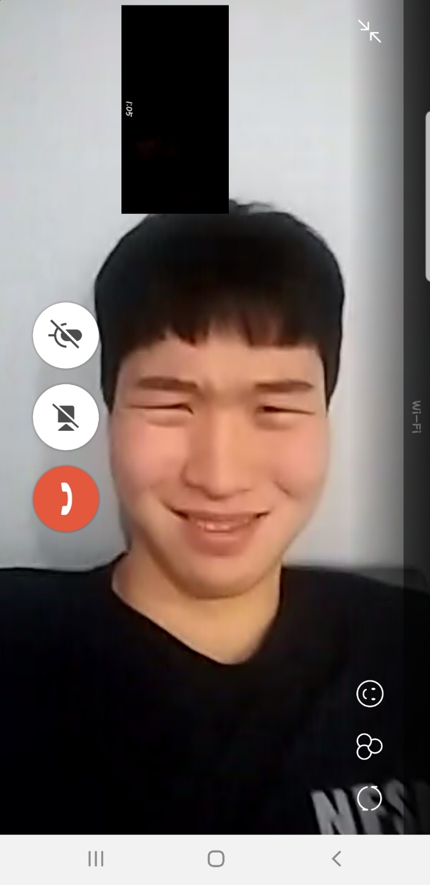

아프리카TV의 LOL 방송 BJ. 포지션은 원거리 딜러이며, 본명은 이석현이다. 생년월일은 1993년 6월 27일 아마추어 시절엔(현재도 아마추어로 프로 데뷔를 안함.) 엄지2팀이라는 팀의 멤버였다. 당시 같은 멤버로 가장 유명해진 선수가 벵기. 이전에 페이커, 벵기, 썸데이, 레이스와 함께 '고전파'팀을 결성했으나, 개인 사정으로 공식 대회에는 출전하지 못하고 뿔뿔이 흩어졌다. 이 때 팀을 결성한 멤버는 캬하하를 제외하면 모두 프로게이머가 되었다. 페이커와 벵기는 SKT T1, 썸데이는 KT, 레이스는 진에어 소속. 롤챔스 2013 윈터 시즌 본선에 진출했다. 소속은 Team NB.롤 대회에서 다수 준우승을 이룬 경험이 있다. NLB와 국가대표 선발전이 대표적이다. 콩하하 본인이 말한 바에 의하면, CJ에서 원딜 제의가 들어온 적이 있으나 거절했다고 한다. 2014 아프리카 올스타전에서 준우승했다. 바텀 라인전에서 매 경기 상대 미러픽을 하면서 압살했다. 하지만 같은 팀원 모두가 세 라인에서 우위를 점하였음에도 불구, 무난하게만 흘렀으면 쉽게 이겼을 경기를 아군 정글러 싸빌라가 하이퍼 역캐리하여 3:2로 패배했다. 아프리카TV 방송은 2013년 초부터 시작한 걸로 보인다. 이후 뛰어난 성장세를 보여, 2015년 4월엔 처음으로 아프리카TV 전체 랭킹 1위에 오르기도 했다. 2015년 12월, 아프리카TV 방송대상에서 게임 부문 수상자에 이름을 올렸다. 